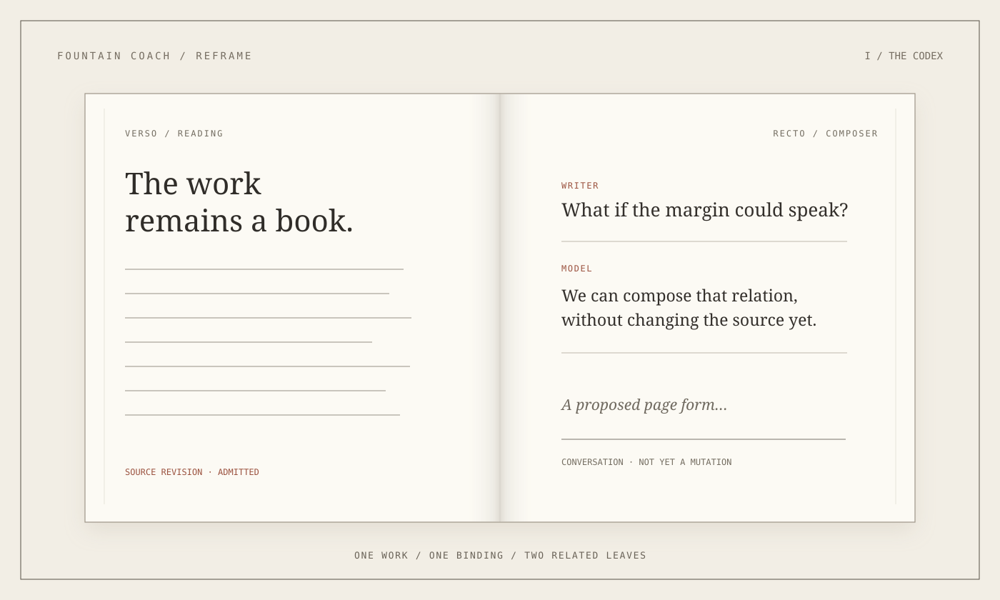
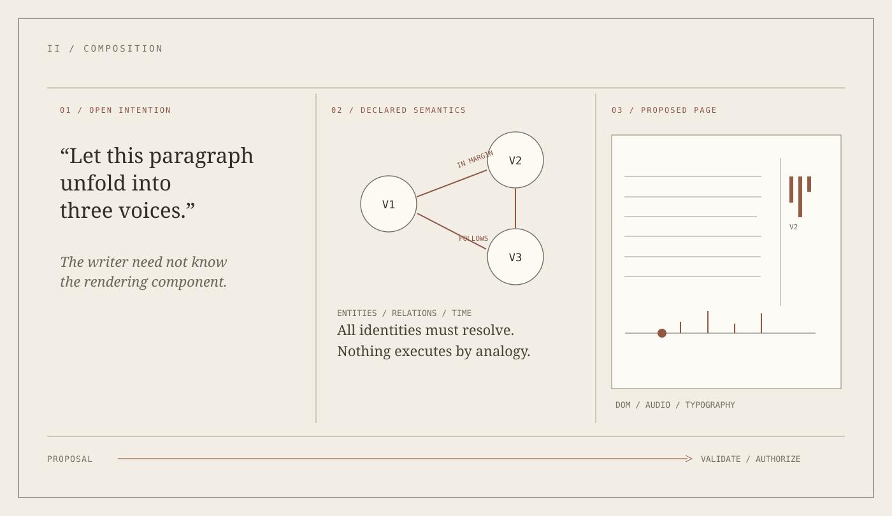
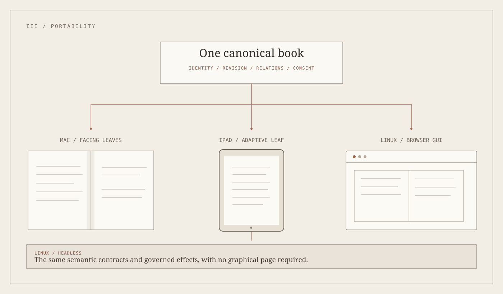
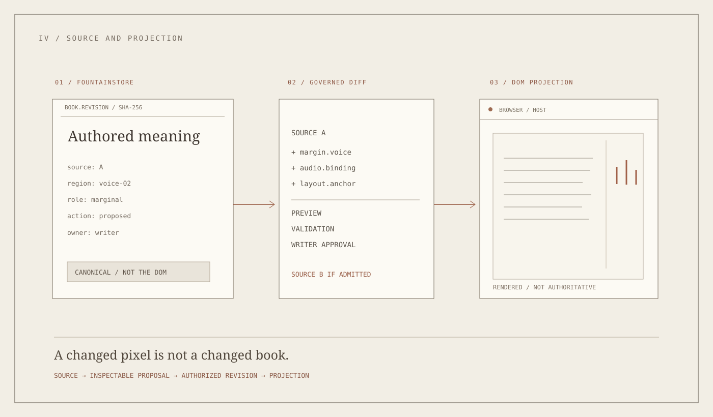

The first mistake is easy to make. Put two rectangles side by side, give them the color of paper, draw a shadow between them, and call the result a book. The mistake becomes visible the moment somebody looks at the middle. One panel seems to rest upon the other. The gutter is a divider. On the right, the writer is still talking into a chat application. On the left, the work waits to be displayed.
A book is not two panels.
It is a continuity between reading and writing. What has been written changes what may be said next; what is said next may change the work. In Reframe, the left and right leaves have begun to express that relation: the admitted work is read on one side, while the existing Composer—writer and model in conversation—occupies the other. The recent codex-facing implementation corrects the immediate visual problem. But the design question underneath it is larger.
What if the writer could compose not only the words of a book, but the kinds of pages a book is capable of becoming?


The book is not the page
Printed books have trained us to mistake their material limitations for their definition. A recto follows a verso. The margin remains a margin. An image is still when the paper is still. This discipline has produced extraordinary literature, but it is not the limit of literary composition.
A digital book can contain a score that sounds, a marginal voice that answers, an image that reveals another layer when approached, an annotated dramatic passage, or an instrument whose behavior can be inspected and revised. The book need not surrender its dignity as a book to accommodate any of these things. Its coherence comes from authored relationships, not from a permanent inventory of widgets.
This is why First Reading and Teatro belong to the same larger investigation. One explores the measured reading of text; the other treats performance, memory, sound, and spatial relation as forms that can be composed. Neither must collapse into the other. A book should be able to contain both while making clear which kind of thing the reader is encountering.
The question is no longer how to add a button to a page. It is how the writer and the model can author a new relation and let the book adopt an appropriate form.
Composer is inside the book
The right page of Reframe is not merely an assistant attached to an editor. Composer is an instrument of dialogue. It is where the writer can ask what the work is doing, propose a line, reject the proposal, or invent a form that has no name yet. The model participates in that exploration; it does not acquire the right to alter the manuscript by declaring that it has understood.
Imagine the writer saying: “Let this paragraph unfold into three voices. Put the second at the margin. I would like to hear them separately before they meet.”
This is not a request for a particular React component. It is an artistic proposal. The writer and model may need to decide what counts as a voice, whether the voices are simultaneous, what their temporal relations are, and what the reader may control. The model might propose a structure that uses an existing Teatro instrument. The writer may decline it and choose a purely typographic rendering instead.
Only after such an understanding exists is there something precise enough to implement. The resulting structure can be offered, previewed, revised, and—when authorized—admitted to the book. The conversational path is open-ended. Its consequences are not.
The open-turn mediation protocol, used by the developing R27 collaboration scenario, begins to separate those responsibilities. It is a developing architectural contract, not yet evidence that every imagined composition can be performed.


What the DOM makes possible
The browser has spent decades learning to compose documents. The Document Object Model gives elements addresses and relationships; HTML supplies document structure, CSS presentation, SVG vector drawing, and browser APIs focus, selection, accessibility, input, audio, and animation. A web page is not just a sheet of text. It is an extraordinarily composable field.
This is a useful foundation for Reframe. The book can have a canonical structure of its own, while a browser renders its current projection as a document. A paragraph, score, annotation, image, timeline, or stage can have an explicit identity. The writer could rearrange the relation between them without instructing a programmer to rebuild the application.
React is a good means of expressing interactive components against that surface. Vite is a fast build and development tool. They are not, however, the ontology of the book. The DOM is likewise not the definitive manuscript: a browser may insert rendering nodes, change layout in response to available space, or discard a temporary interaction when the page reloads.
The DOM is a rich projection of an authored composition, not its authority.
That distinction protects the work. An observed change in the browser is not automatically a new edition. An offered transformation is not a source revision. An animation is not proof that its underlying scenario ran. The governed semantic transformation contract explicitly separates the semantic State A → State B change from browser rendering and publication. MIDI 2.0-timed WebKit transitions carry the same distinction into animation, focus, accessible slots, and correlated time.
These are not bureaucratic refinements. They make creative freedom sustainable. If the book can become many things, it must also know precisely what it has become.
One work, more than one host
A Linux computer need not imitate a Mac desktop to present Reframe. A browser can display the codex, render the same composed regions, and talk to admitted instruments. On a large screen, reading and Composer may occupy facing leaves. On a narrower iPad, the leaves may be encountered one at a time, with the relationship between them preserved. A headless Linux service needs no leaves at all: it must understand the same source revisions and operations.
What travels between these environments is not a frozen screenshot. It is the identity of the work, its versioned semantic structure, its reading position, its conversational continuity, and the state of its authorized operations.
The cross-platform runtime contract already expresses this ambition at the Swift level. A portable codex must make it real for the book itself. A visual adjustment may be different on macOS and Linux. The meaning of a newly authored predicate or the identity of the source cannot.


Languages a writer can invent
The writer's freedom becomes more interesting when it extends beyond choosing a layout. Why should the vocabulary of composition be fixed by the developers of Reframe?
Suppose the writer wants a plate to remember a collision. That word might mean retaining a trace of the last excitation, letting it decay, and making the trace audible when another event occurs. Or it might mean something entirely different. The model's first task is not to write Swift. It is to help establish what the writer means.
A new domain-specific language can then describe that relation precisely. If its semantics can be expressed through existing typed primitives, a compiled interpreter can load a new versioned language definition and validate it without rebuilding Reframe. If the new behavior requires an unavailable algorithm, the model may implement a separate Swift instrument, compile and test it, and propose its admission under the instrument-creation contract.
This is the distinction between composing a new language and implementing a new primitive. The two operations have different risks, but neither requires adding another rule for what to do when the writer says a particular sentence.
The conversational scenario-authoring contract, extended by the pinned R27 language-authoring decision, sets out that distinction. Its generic runtime-defined DSL engine is still an implementation target. CsoundTeatro is an existing, narrower example of the precision such a language requires, not proof that arbitrary new grammars can already execute.
The implementations we can build upon
There is no need to pretend that this must begin with an empty repository.
The Teatro Stage Web implementation already combines React, Vite, Three.js, physics, Csound, and MIDI 2.0-related bridge code. It demonstrates a browser environment capable of more than conventional text layout.
The independently owned Domain Reasoning Portal uses a newer React/Vite stack and structured document components, with declared unit, accessibility, and browser-visual test workflows. It is closer to the editorial side of this argument.
These are two working lines of development, not yet a unified cross-platform book. Their library versions differ; their component trees and semantic contracts are not interchangeable by assertion. The architectural opportunity is to make them both consumers of a shared, versioned composition contract, not to merge everything into one increasingly large React application.
The browser then becomes one of Reframe's principal surfaces. Native applications retain the platform responsibilities they do best. Composer can make DOM-backed capabilities available to the writer when the governing instrument is actually present and admitted.


The proof a product must offer
The first demonstration should be modest enough to falsify.
Open the same book on macOS and Linux. In Composer, propose a new interactive region that can be expressed from existing admitted primitives. Let the model construct a typed composition proposal. Preview it in a React/DOM projection. Change its placement, inspect what changed semantically, authorize the edit, and reopen the work on another host.
The source identity must survive. So must the dialogue, the region's semantic identity, and its capability bindings. The same admitted operation must have the same meaning even if typography, available input methods, or page dimensions differ. An unavailable browser feature may change the visual method; it must not invent another semantic result.
A second demonstration should deliberately request a behavior that no installed instrument can perform. Reframe must be able to say so. Conversation continues, while execution remains unavailable. Only a separately validated and authorized new instrument may change that answer.
Neither test is yet complete. The current native codex presentation has been exercised on the Mac; Linux headless portability is partial; Linux GUI and iPadOS authoring parity remain to be admitted and independently verified. The semantic browser contract establishes further boundaries but does not itself constitute a complete browser client.
The distinction between an ambition and a witnessed product is one of the most valuable things this architecture can preserve.
A book that remains a book
The ambition is not to replace literature with interactive novelty. The simplest book should remain simple. A sentence may need nothing beyond a quiet page and somebody willing to read it.
But simplicity should be a choice made within an expressive medium, not a limitation imposed by the application.
A writer should be free to invent a different kind of page, to work out its meaning with a model, to let the model implement what can be implemented, and to publish the result without surrendering authorship to either the model or the software stack.
That is the product idea behind the composable book. It keeps the integrity of a book while refusing to decide, once and for all, what a book is allowed to contain.
CONTINUE READING
A connected argument
These routes separate the conceptual proposal from the existing implementations, independent essays, and governing contracts.
- Reframe — ProductReframe public estate; Mac implementation source is collaborator-only
- Chapter 58 — Open-turn mediationPublic governance behind the draft R27 collaboration scenario
- Chapter 83 — Conversational authoringHow writer and model design executable scenarios
- Chapter 108 — Portable runtimePlatform-neutral semantics and execution
- Chapter 124 — Timed WebKitDOM as governed visual surface
- Semantic Compilation essayAn edition is authored, not harvested
- Reframe and Business ValueWhy independent publishing needs operational identity
- Teatro essayAn unfinished composition